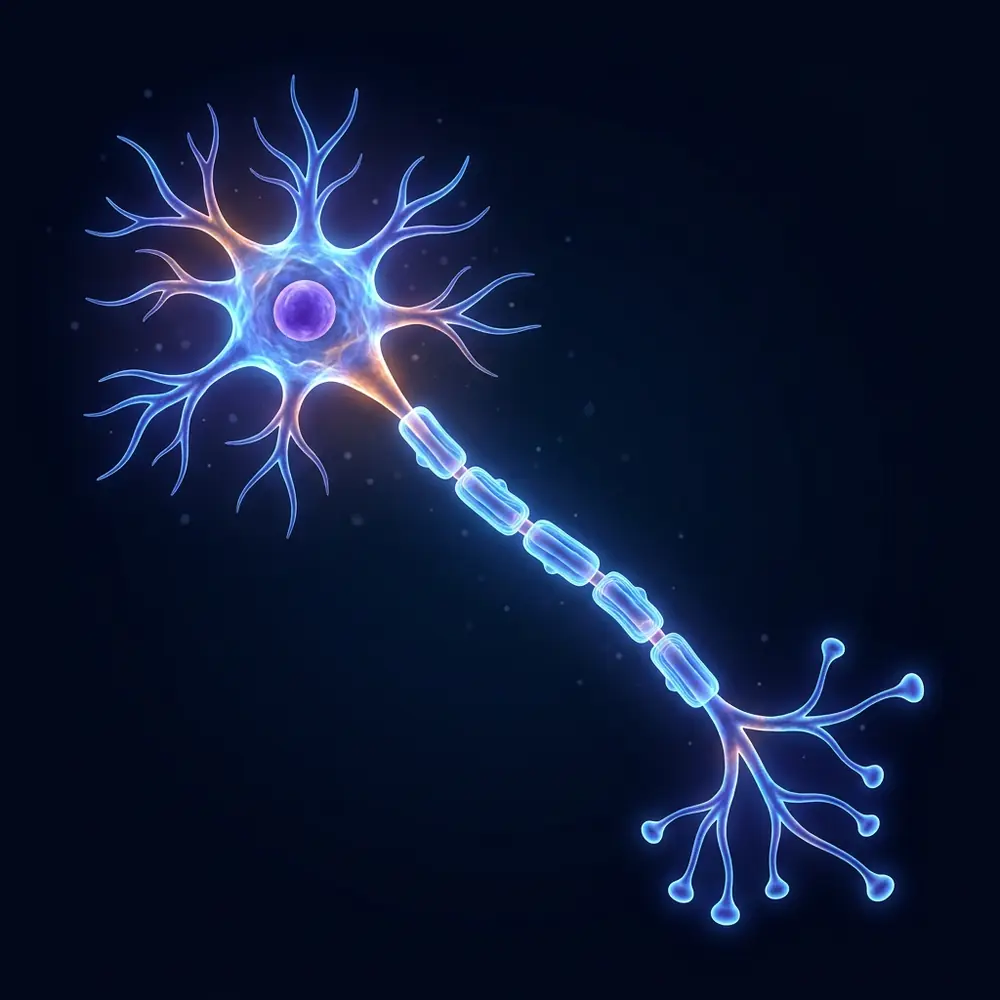

全景神经元全貌
100 µm
示意图（AI 生成）

镜头按信号的走向依次停 8 站：胞体 → 尼氏体 → 高尔基体 → 线粒体 → 轴丘 → 髓鞘与郎飞结 → 轴突末梢 → 突触，每站约 6 秒，再回到全景循环。随时可以暂停，或点神经元上的发光点、站点列表、左下角定位图直接跳转。
全景里注意看：膜电位曲线每冲过阈值一次，就有一个橙色光点从轴丘出发，在郎飞结之间一跳一跳地跑到末梢——这就是跳跃式传导（速度和时间都放慢了，示意）。
键盘：← → 上一站 / 下一站，空格 暂停 / 播放，F 全屏，Esc 关闭本窗口。手机上可以在画面上左右滑动换站，下方面板也可以左右滑。
老师小建议：投屏后先暂停在全景，让学生沿着神经元说出"信号从哪进、从哪出"，再用 → 逐站揭晓；每站最后读一下"临床联系"，把结构和疾病连起来。
静息电位 −70 mV、阈电位约 −55 mV、峰值约 +30 mV、离子浓度、传导速度等，都是教科书常用的典型值，不同神经元差别不小。膜电位曲线、光点传导、活跃度条和事件流是示意动画，时间轴被大幅拉长（真实的动作电位只有 1–2 毫秒），不是实时测量。放大倍数和比例尺按典型尺寸估算；全景图里的轴突被大大缩短了（真实的运动神经元轴突可长达约 1 米）。图像由 AI 生成，形状和颜色做了艺术化处理，不代表真实显微照片。
灵感来源 @thegreatest_sv 在 X 上分享的神经元 HUD 动画；本页没有使用原视频或其画面，图像、文字与代码均为原创。姊妹篇：动物细胞漫游 · 外泌体与细胞外囊泡漫游。